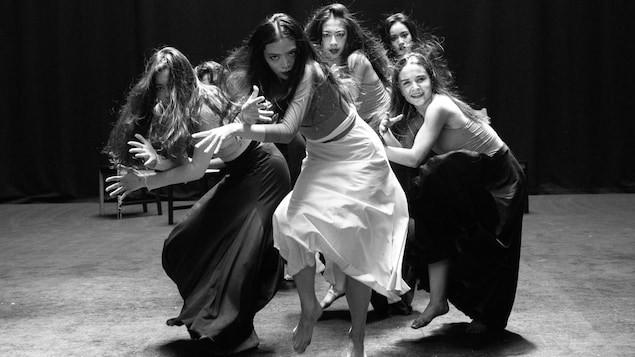
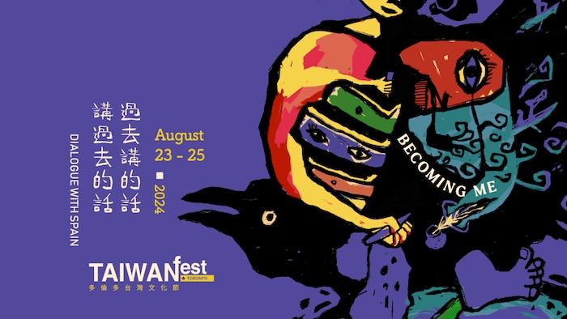

晒呐风（Sinophone）泛指华语语系，希望展示台湾多元多语言多文化的样貌。

薛喻鲜和舞者带来佛拉明哥舞“狂韧．岛， Flamenco de Formosa”。
照片：Radio-Canada / kuo chengchang / Taiwan Fest
Yan Liang
加拿大台湾文化节（Taiwan Fest）本月底开幕，今年的主题是“Becoming Me，过去讲的话、讲过去的话”。
台湾文化节多伦多（新窗口）部分将在8月23日至25日举行，温哥华部分（新窗口）举办日期为8月31至9月2日。
台湾文化节的总策划吴权益（Charlie Wu）对加广中文表示，今年台湾文化节对话国家是西班牙。西班牙曾在荷兰殖民台湾之前，统治台湾16年。
担任台湾文化节总策划超过20年的吴权益（Charlie Wu）
照片：Radio-Canada / submitted by Charlie Wu
在美食夜市和亲子活动之外，我一直希望文化节能有对台湾多元文化艺术历史更深入的研究与探讨。今年也不例外，包括了弗拉明戈舞蹈，挖掘大航海时代西班牙在台湾遗迹的纪录片，华语晒呐风音乐探索，对客家文化语言探讨，台湾乡土作家黄春明作品解析等。
而台湾文化节，因多年来的跨文化对话，逐渐形成一个分享不同文化故事的聚会。
对话西班牙
吴权益表示，台湾与西班牙曾有过历史上的交集。再后来，西班牙和台湾都曾出现独裁者，采取压制和消灭多元语言和文化政策。台湾是直到民主化之后，才重新探索和拥抱岛内的语言和文化的多元。
台湾女生薛喻鲜从12岁开始在西班牙学习，受母亲的影响，她开始练习独特的佛拉明哥舞，并成为了西班牙国家舞团第一位外国佛拉明哥舞者。
这次她将带来狂韧．岛， Flamenco de Formosa（新窗口），

2024年，多伦多台湾文化节海报。
照片：Radio-Canada / Taiwan Fest
此外，文化节上演的纪录片《在圣堂里的一场演出》（新窗口）记录了当代艺术家兼本片导演许家维于2018至2020年间，配合考古团队在北台湾和平岛挖掘诸圣教堂的艺术计划 ——这是非常珍贵的大航海时代西班牙在台湾的殖民历史遗迹。
许家维在遗迹上安排了一场音乐会。这场跨领域合作不仅让艺术家与考古学家以新方式说故事，也让台湾重新回到西班牙殖民时期的时空。他成功地将电影和当代艺术的语言结合在一起，也以震撼人心和科学基础的方式探索亚洲殖民历史。
展示晒吶風
晒呐风，由英文Sinophone而来，泛指华语语系。加州大学洛杉矶分校比较文学系与亚洲语言文化系教授史书美（Shih Shu-mei)最早提出华语语系，sinophone studies)概念，研究对象是
中国领土之外的华语社群和文化以及中国内部那些被强迫（或是自愿）学习以及使用普通话的少数民族社群和文化”。
吴权益主持下的台湾文化节以及Jade Music Fest推出了”¡晒呐风! (Sinaphoen)系列节目，为的是推广华语音乐的多元样貌，展现不同国家、曲风、语言的华语音乐人。˙
我希望人们了解，华语不仅仅是通常人们想到的国语和粤语，实际上，它体系里语言和要丰富复杂得多，像台语、客家话、潮汕语都有自己的发展特色。
今年多伦多台湾文化节中，邀请观众参与和体验客家文化的“打逗趣——客流感”（新窗口）
吴权益介绍说，1988年台湾发生「还我母语运动」大游行。客家人对文化的传承一直非常关注，客家族群的迁徙遍布全世界，而台湾的客家族群与其他地方的客家族群之间的文化差异也引起了许多人的好奇。美洲台湾客家乡亲联合会及多伦多台湾客家同乡会今年都参与了推介了解客家文化的活动。
台湾文化节今年还邀请2022年台湾金曲奖最佳台语乐团的百合花乐队前来演出。
它的主唱林奕硕将做【识路不是路 – 新世代台语歌的诞生】为题的演讲，分享台湾年轻世代对文化源头的关注。
他们的「¡晒呐风! —不是路」演出将与加拿大同样在探索与母文化连结的音乐人百城 Tennyson King合作举行。˙
此外，呼应今年Becoming Me，成为我
的主题，在温哥华文化节聚集五组具香港背景的音乐人，他们自称第三文化组合，因在不同文化背景中成长而拥有独特的自我认同。
Début du widget Widget. Passer le widget ?
Fin du widget Widget. Retourner au début du widget ?Yan Liang文章来源于RCI:【报道】台湾文化节即将登场，总策划吴权益：对话西班牙，展示”晒呐风“